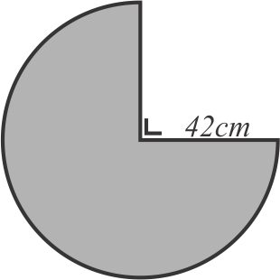

Lingkaran
\( Kelling = \pi \times 2r \)
\( Luas = \pi \times r^2 \)
Panjang Busur dan Luas Juring

Sudut Pusat dan Sudut Keliling
Pada sebuah lingkaran dapat dibuat berbagai sudut didalamnya, khususnya sudut yang mempunyai hubungan adalah sudut pusat lingkaran dan sudut keliling lingkaran yang menghadap busur yang sama. Sudut pusat adalah sudut yang terbentuk oleh 2 garis jari-jari, sedangkan sudut keliling adalah sudut yang terbentuk oleh 2 talibusur. Untuk memahaminya dapat diperhatikan gambar sebagai berikut.

gambar (i) merupakan sudut pusat yang menghadap busur \(AB\), sedangkan gambar (ii) merupakan sudut keliling yang menghadap busur \(PQ\). Sudut pusat dan sudut keliling akan memiliki hubungan apabila keduanya menghadap busur yang sama.

Pada gambar (iii) sudut pusat dan sudut keliling sama-sama menghadap busur \(AB\), kerena kedua sudut tersebut menghadap busur yang sama maka besar sudut keliling adalah setengah dari sudut pusat, dengan kata lain besar sudut pusat adalah dua kali sudut keliling.
Sedangkan pada gambar (iv) sudut pusat dan sudut keliling tidak menghadap busur yang sama, sudut pusat menghadap busur \(AB\), sedangkan sudut keliling menghadap busur\(PQ\), maka keduanya tidak memiliki hubungan.
-
Keliling lingkaran yang memiliki jari-jari \(14cm\) adalah ....
Diket:
\(r=14cm\)
Jawab:\(K=\pi \times 2r\)
\(K= \frac{22}{7}\times 2\times 14cm\)
\(K=88cm\)
Jadi jawaban yang tepat adalah C.
-
Suatu lingkaran memiliki keliling \(11dm\) diameter lingkaran tersebut adalah ....
Diket:
Keliling \(=11dm = 110cm\)
Jawab:\(K=\pi \times d\)
\(110=\frac{22}{7}\times d\)
\(110\times \frac{7}{22}=d\)
\(d=\frac{7}{22}\times 110\)
\(d=35cm\)
Jadi jawaban yang tepat adalah C.
-
Jari-jari lingkaran yang memiliki luas \(706,5cm^2\) adalah ....
Diket:
Luas \(=706,5cm^2\)
Jawab:
Luas\(=\pi \times r^2\)
\(706,5=3,14 \times r^2\)
\(\frac{706,5}{3,14}=r^2\)
\(r^2=\frac{706,5}{3,14}\)
\(r^2=225\)
\(r=\sqrt{225}\)
\(r=15cm\)
Jadi jawaban yang tepat adalah C.
-
Luas bangun di atas adalah ....
Diket:
\(r=7cm\)
besar sudut \(90^\circ\)
Jawab:
Luas juring\(=\frac{90^\circ}{360^\circ} \times\) luas lingkaran
\(=\frac{90^\circ}{360^\circ} \times \pi \times r^2\)
\(=\frac{90^\circ}{360^\circ} \times \frac{22}{7} \times 7^2\)
\(=\frac{\cancel{90^\circ}1}{\cancel{360^\circ}4} \times \frac{22}{\cancel{7}1} \times \cancel{49}7\)
\(=38,5cm^2\)
Jadi jawaban yang tepat adalah B.
-
Luas bangun di atas adalah ....
Diket:
\(r=42cm\)
besar sudut \(=360^\circ - 90^\circ\)
\(=270^\circ\)
Jawab:
Luas juring\(=\frac{270^\circ}{360^\circ} \times\) luas lingkaran
\(=\frac{270^\circ}{360^\circ} \times \pi \times r^2\)
\(=\frac{270^\circ}{360^\circ} \times \frac{22}{7} \times 42^2\)
\(=\frac{\cancel{270^\circ}3}{\cancel{360^\circ}4} \times \frac{22}{\cancel{7}1} \times \cancel{1.764}252\)
\(=4.158cm^2\)
\(4.158cm^2 = 41,58dm^2\)Jadi jawaban yang tepat adalah A.
-
Luas lingkaran yang memiliki keliling \(44cm\) adalah ....
Diket:
\(Keliling=44cm\)
Jawab:
\(Luas=\pi \times r^2\)
\(Keliling=\pi \times 2r\)
\(44=\frac{22}{7}\times 2r\)
\(44\times \frac{7}{22}=2r\)
\(14=2r\)
\(frac{14}{2}=r\)
\(7=r\)
\(r=7\)
\(Luas=\pi \times r^2\)
\(Luas=\frac{22}{7} \times 7^2\)
\(Luas=\frac{22}{7} \times 49\)
\(Luas=154cm^2\)
Jadi jawaban yang tepat adalah B.